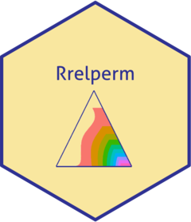

Rrelperm generates two- and three-phase relative permeability estimates for water and hydrocarbon systems. The calculated results are reported in a tabular format for fluid saturations from zero to one.
Installation
You can install the released version of Rrelperm from CRAN with:
install.packages("Rrelperm")
Example
library(Rrelperm) library(ggplot2) library(ggtern) library(magrittr) rel_perm_owg_st_ii_swsg <- kr3p_StoneII_SwSg(SWCON = 0.13, SWCRIT = 0.13, SOIRW = 0.20, SORW = 0.2, SOIRG = 0.1, SORG = 0.1, SGCON = 0, SGCRIT = 0, KRWIRO = 0.45, KROCW = 1, KRGCL = 0.35, NW = 4.25, NOW = 2.5, NG = 3, NOG = 2, NP = 501) rel_perm_owg_st_ii_swsg <- as.data.frame(rel_perm_owg_st_ii_swsg) colnames(rel_perm_owg_st_ii_swsg) <- c("Sw", "Sg", "So", "Kro") rel_perm_owg_st_ii_swsg$Kro_range <- cut(rel_perm_owg_st_ii_swsg$Kro, breaks = seq(0,1, by = 0.1), right = TRUE, include.lowest = FALSE) rel_perm_owg_st_ii_swsg_oil <- rel_perm_owg_st_ii_swsg[rel_perm_owg_st_ii_swsg$Kro > 0, ] rel_perm_owg_st_ii_swsg_oil <- droplevels(rel_perm_owg_st_ii_swsg_oil) p <- ggtern(data = rel_perm_owg_st_ii_swsg_oil, aes(x = Sw, y = Sg, z = So, value = Kro)) + geom_point(aes(value = Kro, fill = Kro_range, color = Kro_range), size = 1, shape = 22) + scale_T_continuous(limits = c(0.0,1.0), breaks = seq(0,1,by = 0.05)) + scale_L_continuous(limits = c(0.0,1.0), breaks = seq(0,1,by = 0.05)) + scale_R_continuous(limits = c(0.0,1.0), breaks = seq(0,1,by = 0.05)) + ggtitle("Three-phase Oil Relative Permeability - STONE II") + theme_classic() p